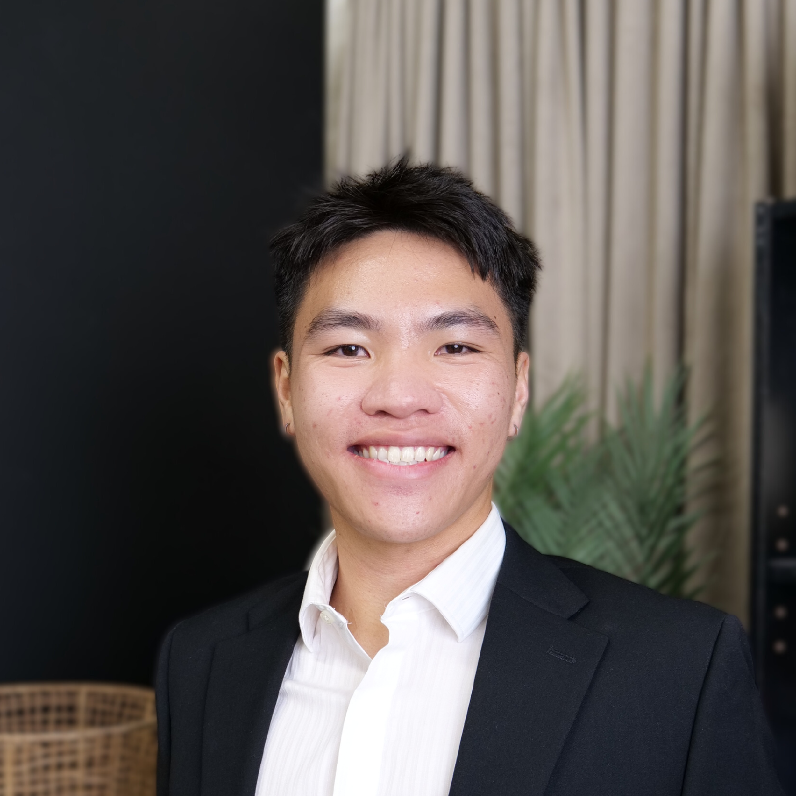

About
Hello! I'm Kenji Her, a data engineer at Travelers Insurance.
Originally from Saint Paul, Minnesota, I earned my Bachelor of Science in Mathematics
and Master of Science in Computer Science from the University of Minnesota.
Outside of work and academics, I enjoy raving, hitting the gym, and playing ultimate frisbee.
I also hope to use this personal website as a medium to express more creativity in my life.

Frisbee Lore
Have I mentioned that I play ultimate frisbee?
One summer day before my freshman year of high school,
I was tossing with some of my cousins who played.
They gave me a hard time about my terrible throws.
Fast forward to the club fair that same year—
I signed up for my high school’s club team to prove to them—
and myself—that I could improve. Since joining,
Ultimate has been a crucial part of my life.
Although my high school's team wasn’t among the top-ranked in Minnesota, we steadily improved over my four years there. Along the way, I earned several accolades: twice named captain, two-time all-conference, all-state selection, and a 4th-place finish at YCC. I also helped make ultimate frisbee a varsity letter sport at Roseville. By senior year, I knew ultimate would play a major role in my college decision. Ultimately, I chose to attend the University of Minnesota
Unlike my high school, the U of M had an established national contending program. After eventually being cut from the last round of closed tryouts, I officially joined the U's B team, Ugly Duckling. My freshman year tryouts taught me many valuable lessons, a significant one being that I had to unlearn a lot of bad habits.
Although my high school's team wasn’t among the top-ranked in Minnesota, we steadily improved over my four years there. Along the way, I earned several accolades: twice named captain, two-time all-conference, all-state selection, and a 4th-place finish at YCC. I also helped make ultimate frisbee a varsity letter sport at Roseville. By senior year, I knew ultimate would play a major role in my college decision. Ultimately, I chose to attend the University of Minnesota
Unlike my high school, the U of M had an established national contending program. After eventually being cut from the last round of closed tryouts, I officially joined the U's B team, Ugly Duckling. My freshman year tryouts taught me many valuable lessons, a significant one being that I had to unlearn a lot of bad habits.